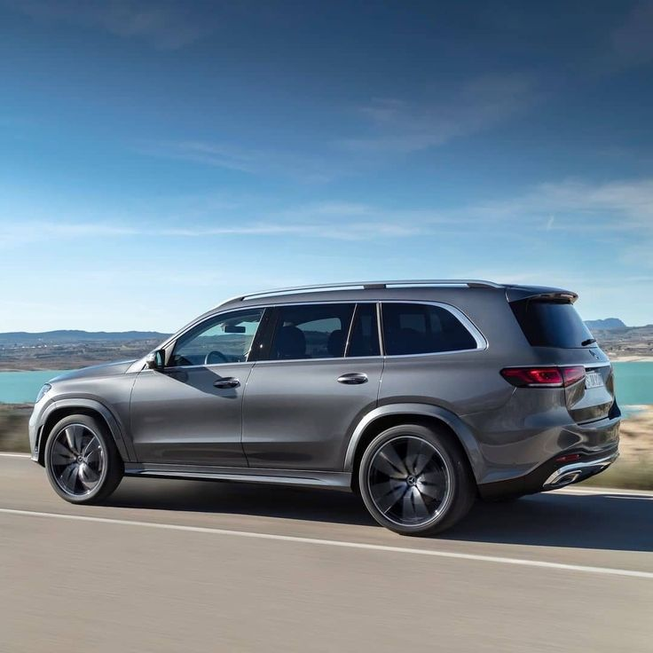
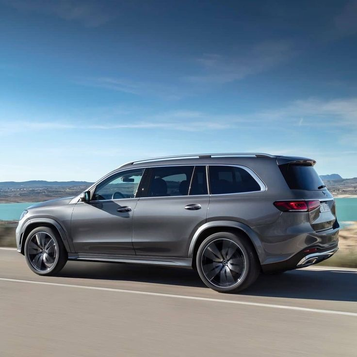

Mercedes-Benz-gls (2024)
 

The Mercedes-Benz GLS, formerly Mercedes-Benz GL-Class, is a full-size luxury crossover SUV produced by Mercedes-Benz since 2006. In each of its generations it is a three-row, seven-passenger vehicle positioned above the GLE (formerly Mercedes-Benz M-Class before 2016). The GLS is considered the flagship of the marque's SUV lineup, although the body-on-frame G-Class (originally intended for military off-roading but also offered in luxurious trims) is more expensive and has been in production longer.
- Manufacturer: DaimlerChrysler (2006–2007) Daimler AG (2007–2022) Mercedes-Benz Group (2022–present)
- Production: 2006–2015 (GL-Class) 2015–present (GLS)
- Assembly: Germany
- Designer: Hartmut Sinkwitz
- Colors Available: Grey, Black, White, Blue